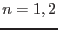

XMM-Newton Science Analysis System
rgsframes (rgsframes-3.18) [xmmsas_20170112_1337-16.0.0]
Description
Input to rgsframes
are the RGS pixel files (R*SPE.FIT and R*HTE.FIT) and
auxiliary file (R*AUX.FIT) in the ODF.
From this it produces a single dataset per CCD which contains all the
information needed for further processing. The PIXELS table
contains the raw pixel data. The EXPOSURE table contains
exposure relevant
information per frame readout for the CCD.
The following corrections are applied to the pixel data:
- The pixel coordinates are transformed into CAL coordinates
RAWX, RAWY. (In practice this means adding 1 to the values in the ODF)
The same correction is applied to the keywords related to the windowing.
- Frame counter is corrected for 'wrap around problems' using
saslib routine CorrectWrapAround()
- find and remove duplicate records by checking the following
columns: FRAME, CCDNODE, RAWX, RAWY
- The SER column is replaced by a GRADE and SHAPE column. The
algorithm for this depends on the version of the DPP software
running on board.
The DPP version number is obtained from the CAL
(CAL_getMiscellaneousDataValue("DPPVERS")). SER values not
listed in the table below will result in an fatal error.
DPP version 16 DPP version 16.2 or 19.0
----------------- -----------------
SER SHAPE GRADE SER SHAPE GRADE
0 0 1 0 0 1
1 null 2 1 1 4
2 null 3 2 2 2
3 1 4 3 3 2
4 4 3
5 5 3
6 6 3
7 7 3
Note this is not applied for HTR processing.
For HTR now processing related to the Y-column data is performed.
The following processing is done on the frame data to create the
EXPOSURE table:
- The table is sorted on increasing frame numbers.
- The frame time stamp is calculated using the OAL calls OAL_frameCounterToObt
and OAL_obtToTimeTag. The value is written to a newly added column TIME
- The exposure times of each frame is calculated based on elapsed time since
the previous readout of same sequence ID. Readout times are calculated
from eoscoars and eosfine clock values.
If no previous readout exists, the exposure time is set to the
average exposure time estimated by also considering the position of
the readout in the readout circle (thus producing the correct result
for duplicate readouts). The first frame of every exposure has zero exposure time.
Exposure times are written into the newly added column TIMEDEL
- find and remove duplicate records by checking the FRAME number
- Find missing frames by checking if the frame number and CCD sequence
IDs match the the length of a readout sequence. The readout sequence
is obtained from the RnAUX2 () table in the ODF AUX file.
- An optional column PIXELRATE is added which contains the
number of pixels in the PIXELS table for each frame.
- Frames are flagged 'bad' in a FRAMEFLAG column according to a
series of criteria. See below.
- corrections of the exposure time due to the number of pixels
exceeding upper threshold are calculated by
FRACEXP is calculated and stored per readout node. REJPIX
is the number of pixels above upper threshold, and WINDOWDX/Y
is the number of pixels read per node in CCD-X & CCD-Y.
Frames flagged 'bad' are excluded from the GTI (Good Time Interval).
Criteria for bad frames implemented at the moment are:
- frames having a zero exposure time.
- the first frame
- frames with lost events (NLOSTEVT /= 0 in AUX table)
- frames with abortflag set (ABORTFLG /= 2 in AUX table)
- frames with non processed pixels (NDPP /= windowdx*windowdy)
- (optional) frames with more pixels per frame than a given value.
- (optional) frames with a pixel rate (pixels/sec) above a given value.
Finally a GTI table is produced
based on the FRAMEFLAG column. If all frames are flagged bad a GTI
table with zero rows is produced.
XMM-Newton SOC/SSC -- 2017-01-12